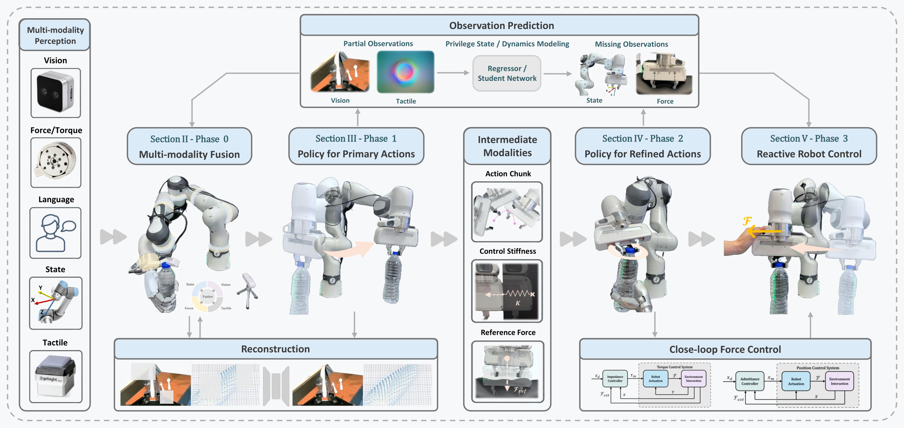
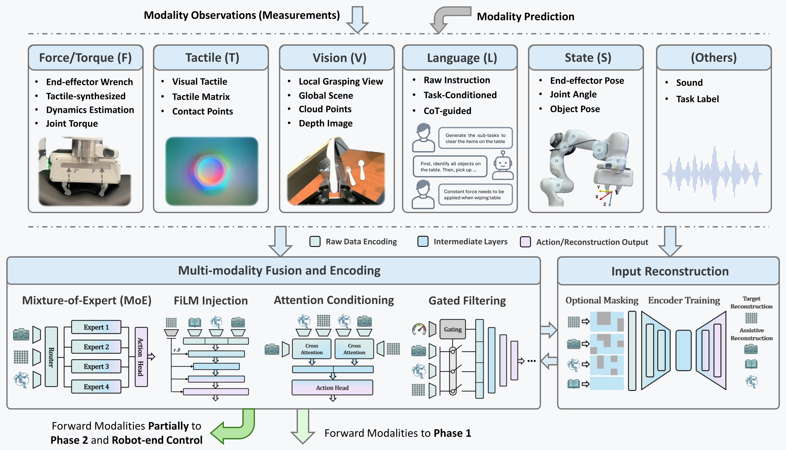
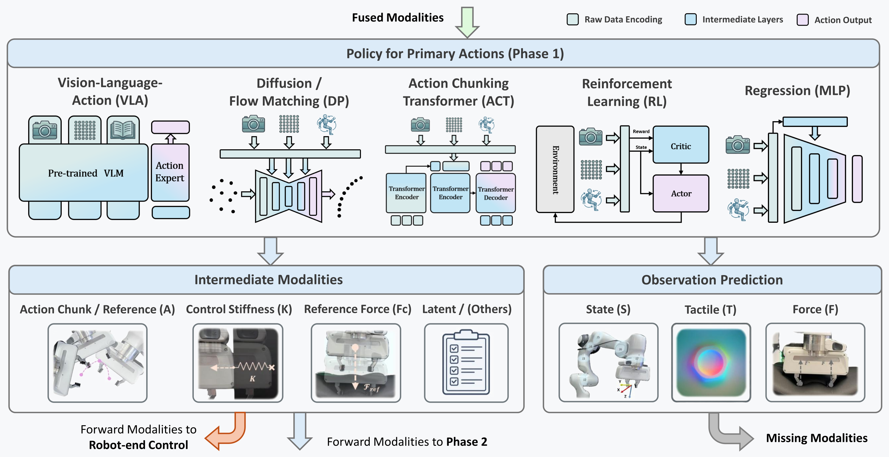
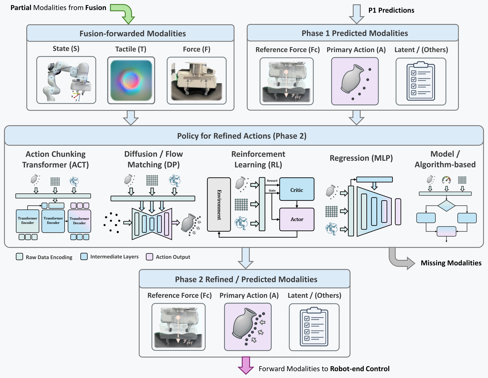
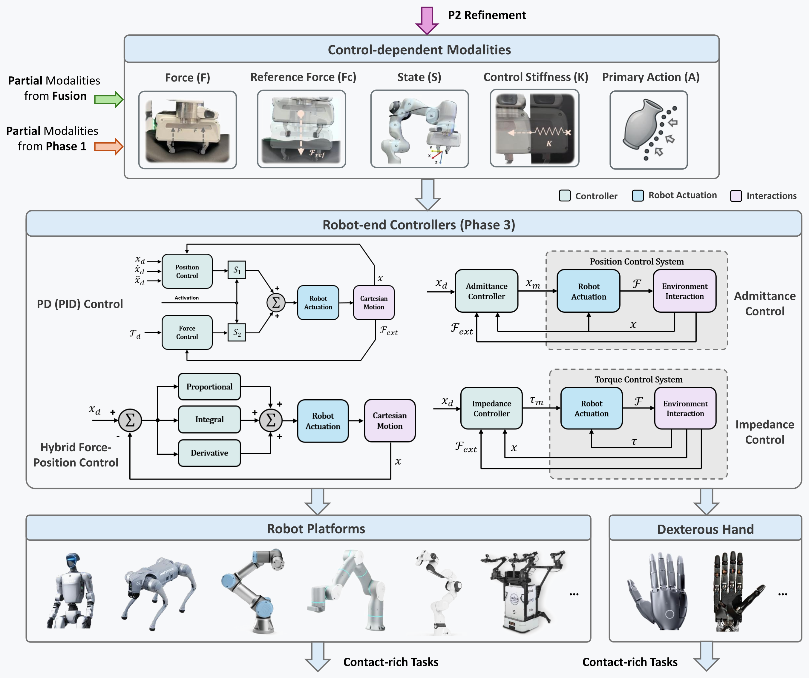
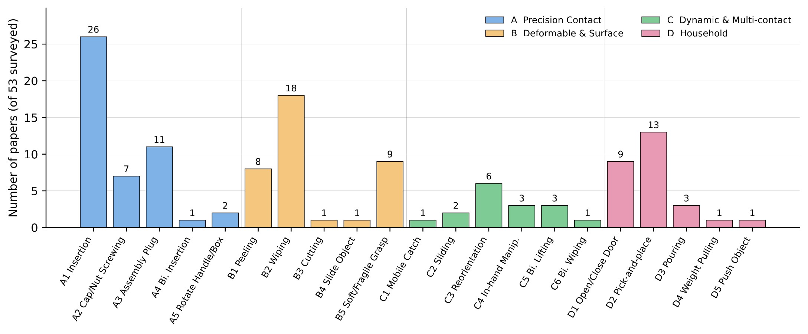

A Survey · TF-M3PF Framework · NTU
A Survey of Multi-modal Learning and Multi-phase Policy Architectures
Nanyang Technological University, Singapore
*Equal contribution ‡Project lead †Corresponding author
mapped in one architecture
perception · fusion · policies · control
policy → refinement → robot-end control
§ 01 — Abstract
Learned policies generalize from multimodal demonstrations, but offer no guarantee of stable contact.
Impedance, admittance and hybrid force–position control stabilize contact, but cannot decide what to do.
TF-M3PF: one architecture mapping how modern systems combine both.
Physically grounded robot intelligence requires robots to perceive, reason about, and regulate their interactions with the physical world. This capability is particularly critical in contact-rich robot manipulation, where successful task execution demands not only visual perception and motion generation, but also force regulation and adaptive control. In this context, recent robot learning methods have made substantial progress by integrating force, tactile, vision, language, and proprioceptive sensing into learned manipulation policies. In parallel, many systems adopt multi-phase architectures that combine high-level policies, semantic modules, and low-level controllers to bridge semantic task understanding with reactive physical execution.
Existing surveys have not explicitly reviewed force- and tactile-aware robot learning from a unified perspective that jointly captures multimodal sensing and multi-phase system design. This survey addresses this gap by proposing the Tactile/Force-aware Multi-Modal Multi-Phase Framework (TF-M3PF), which maps individual methods into a unified hierarchical architecture. The framework characterizes how recent works organize observation modalities, encode and fuse heterogeneous sensory inputs, generate and refine actions across multiple phases, and connect learned policies to reactive robot-end control. Building on this methodological view, we further examine the task settings and infrastructure requirements of physical interaction, thereby integrating both algorithmic and practical perspectives on force- and tactile-aware robot learning.

§ 02 — Framework Explorer
Every surveyed method, placed in one architecture — from raw sensing to reactive control. Hover any module to surface its papers · Select a paper to trace its full pipeline · Esc to clear
§ 03 — Inside the Survey





§ 04 — Cite
@article{shan2026tactileforce,
title = {Tactile/Force-grounded Robot Intelligence: A Survey of
Multi-modal Learning and Multi-phase Policy Architectures},
author = {Shilin Shan and Chuhao Zhou and Ruize Wang and Xinyan Chen and
Xiangyu Chen and Xinyu Zhou and Boyu Ma and Yuxuan Hu and
Jingliang Li and Yuxuan Hu and Geng Li and Guohao Chen and
Tianrui Zhu and Jianfei Yang},
year = {2026},
note = {Manuscript submitted to ACM}
}